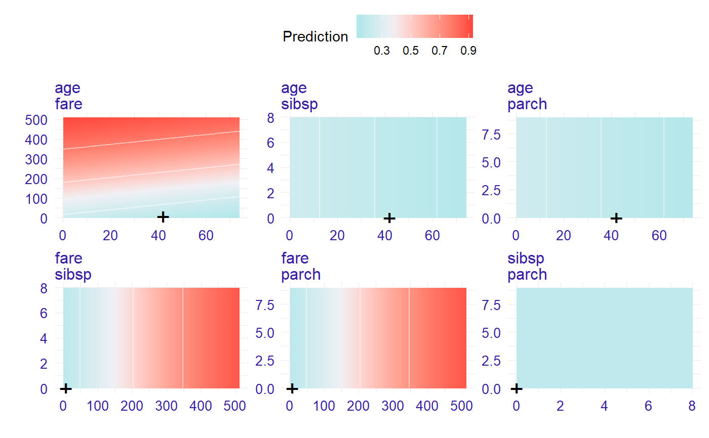
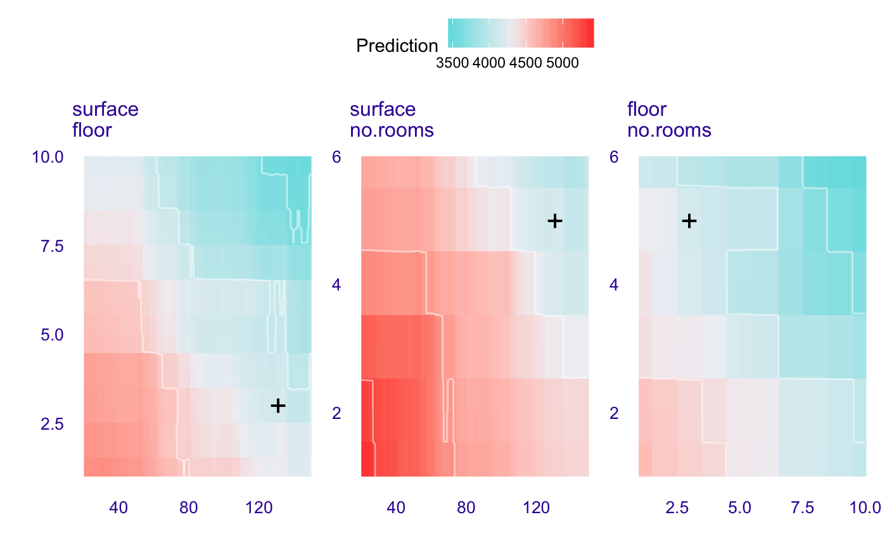

This function calculates ceteris paribus profiles for grid of values spanned by two variables. It may be useful to identify or present interactions between two variables.
ceteris_paribus_2d(explainer, observation, grid_points = 101, variables = NULL)
| explainer | a model to be explained, preprocessed by the |
|---|---|
| observation | a new observation for which predictions need to be explained |
| grid_points | number of points used for response path. Will be used for both variables |
| variables | if specified, then only these variables will be explained |
an object of the class ceteris_paribus_2d_explainer.
Find more details in Ceteris Paribus 2D.
library("DALEX") model_titanic_glm <- glm(survived ~ age + fare, data = titanic_imputed, family = "binomial") explain_titanic_glm <- explain(model_titanic_glm, data = titanic_imputed[,-8], y = titanic_imputed[,8])#> Preparation of a new explainer is initiated #> -> model label : lm ( default ) #> -> data : 2207 rows 7 cols #> -> target variable : 2207 values #> -> predict function : yhat.glm will be used ( default ) #> -> predicted values : numerical, min = 0.1707237 , mean = 0.3221568 , max = 0.9983551 #> -> residual function : difference between y and yhat ( default ) #> -> residuals : numerical, min = -0.9519492 , mean = 4.78827e-11 , max = 0.8167072 #> -> model_info : package stats , ver. 3.6.1 , task regression ( default ) #> A new explainer has been created!cp_rf <- ceteris_paribus_2d(explain_titanic_glm, titanic_imputed[1,], variables = c("age", "fare", "sibsp")) head(cp_rf)#> y_hat new_x1 new_x2 vname1 vname2 label #> 1 0.3545941 0.1666667 0.000000 age fare lm #> 1.1 0.3719860 0.1666667 5.120607 age fare lm #> 1.2 0.3897159 0.1666667 10.241214 age fare lm #> 1.3 0.4077422 0.1666667 15.361821 age fare lm #> 1.4 0.4260202 0.1666667 20.482428 age fare lm #> 1.5 0.4445026 0.1666667 25.603035 age fare lm#> Warning: Raster pixels are placed at uneven horizontal intervals and will be shifted. Consider using geom_tile() instead.#> Warning: Raster pixels are placed at uneven vertical intervals and will be shifted. Consider using geom_tile() instead.library("randomForest") set.seed(59) apartments_rf_model <- randomForest(m2.price ~., data = apartments) explainer_rf <- explain(apartments_rf_model, data = apartments_test[,-1], y = apartments_test[,1])#> Preparation of a new explainer is initiated #> -> model label : randomForest ( default ) #> -> data : 9000 rows 5 cols #> -> target variable : 9000 values #> -> predict function : yhat.randomForest will be used ( default ) #> -> predicted values : numerical, min = 2010.982 , mean = 3505.971 , max = 5840.604 #> -> residual function : difference between y and yhat ( default ) #> -> residuals : numerical, min = -727.4451 , mean = 5.552194 , max = 1262.554 #> -> model_info : package randomForest , ver. 4.6.14 , task regression ( default ) #> A new explainer has been created!new_apartment <- apartments_test[1,] new_apartment#> m2.price construction.year surface floor no.rooms district #> 1001 4644 1976 131 3 5 Srodmiesciewi_rf_2d <- ceteris_paribus_2d(explainer_rf, observation = new_apartment, variables = c("surface", "floor", "no.rooms")) head(wi_rf_2d)#> y_hat new_x1 new_x2 vname1 vname2 label #> 1001 4851.829 20 1.00 surface floor randomForest #> 1001.1 4851.829 20 1.09 surface floor randomForest #> 1001.2 4851.829 20 1.18 surface floor randomForest #> 1001.3 4851.829 20 1.27 surface floor randomForest #> 1001.4 4851.829 20 1.36 surface floor randomForest #> 1001.5 4851.829 20 1.45 surface floor randomForestplot(wi_rf_2d)#> Warning: Raster pixels are placed at uneven horizontal intervals and will be shifted. Consider using geom_tile() instead.#> Warning: Raster pixels are placed at uneven vertical intervals and will be shifted. Consider using geom_tile() instead.# }